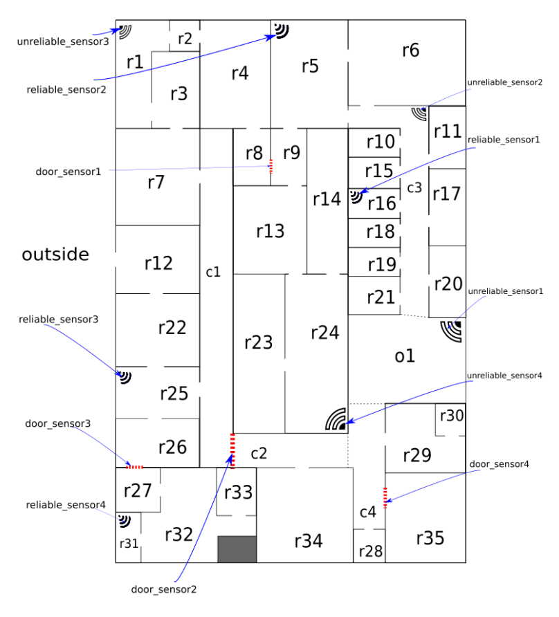

Time series report#
Room light control  Figure 1: Floor plan (note that dotted grey lines denote the boundaries of areas when the boundary is unclear).
Report – COMP9418 Assignment#
Background#
Standard ML pipeline is used to control the flow of this project which includes explore data analysis(EDA), pre-processing, model selection, model evaluation and post-processing.


All time, first 30 mins, last 20 mins, last 40mins – top 10 largest room people difference
For EDA, based on above image, different transition matrixes are used based on different period. One-hot encoding can be used to convert ‘motion’ and ‘no motion’ to 0 or 1. However, since the time requirement is only calculated for referencing speed, similar techniques are not used. Besides, the starting state for HMM is outside, which is observed from first time interval. For model selection, Hidden Markov model (HMM) is used. It is because it allows making different assumption and the data is time-series. Although other sklearn model can be used (weighted ensemble) but it does not really fit the purpose of the assignment and so ignore. More explanation see assumption section. Evaluation or find-tuning is done by manual visual inspection on the transition matrix is done to allow fine-tuning on the result based on the given floor plan image. It is because no test data is given and since the training data is in time series, it cannot be partitioned as well. Although other models could be used to generate ‘fake’ data based on the distribution, due to time constraint, it is not done.
For post-processing, consider the time requirement, the parameters values in the transition matrix is reduced to 4 decimal places for increase the efficiency during inferencing. (trial and error until no significant cost changes). Even though in current data, in the first 30mins, the morning rush from frequently going from outside to different rooms stops around 8:03, Jeremy mention to keep it simple and overfit, I them assume the first rush will take 8 mins.
Assumption#
If the number of people in a room does not change, assume there is no flow from this room. E.g. If one from room 1 go to 2, and one from room 2 go to 1, then assume no flow.
If source room has no number change, then assume no people move
For each room, assume people can move to the one with its door connect to. (since different outcome spaces are tried and no major difference observed)
Assume if the door sensor detects motion, then increase in both rooms that the door sensor connected to, It is because when people pass from one room to another, assume both rooms get people since don’t know which way they pass from and to, don’t know if all from room A to b, or some A to B some B to
People only move to the room if the destination an increase in current room and decrease in the destination room and that increase is the lower bound of the two.
Assume starting state is outside, that is no people inside the room before 8:00
Assume the given one-day dataset follows the standard workday time schedule instead of a special day e.g. holiday.
Assume the data structure from test set follows the given training set e.g. no (None, None) for robot sensor
Assume the sensor pick up only current location information i.e vibration from the wall to other room does not count, people move inside the room is considered stationary for the sensor
Assume cost is measured every 15s as mentioned in the forum
Assume the above assumption holds in the test set and each day are independent. E.g. if tomorrow is holiday it will be treated as the current training set and day is independent of each other
Transition matrix calculation#
Two main things to calculate here: probability of people staying inside the room and the probability of people moving out of the room.
Four transition matrixes are computed based on the above distribution diagram. Periods are: first 8min - peak, last 30 mins to last 18min - peak and last 18min – no movement.#
The probability of people moving to other rooms is based on the lower bound described above.
The percentage of people stay in the current room is calculated based:
1 – percentage(moving out from source room), in which this percentage is measured by total number of people moving out / total people have stayed in the room cross all period.
Then result will be moralised based on the total number of people in that source room across all time periods.
A threshold for the probability is set to optimise the decision of whether to turn on the light. Since the cost of people in room with no light is higher, the threshold is set to a low value. It means that light is more likely to be on even if the no people in room.
Algorithm used & description how it works#
HMM is used. Hidden state here is the probability of having people in each room. The observed state is the sensor data.
Firstly, outcome space is decided based on the floor plan with the nearest neighbours of each room (bidirectional). Then, the transition matrix is pre-calculated based on the movement of people from rooms to rooms as described above. Then reliability is also re-computed based on the difference between expected result and the actual output / sum (accuracy). Note such computation is based on different conditions e.g. motion and no motion are two cases to considered. Then, create a set evidence function based on the accuracy of each sensor. Note setting evidence will override the existing state value. A threshold is set to decide whether the original value should be override, this is obtained by trial and error. Finally, the light is turn on depends on the probability of people in each room with a threshold = 0.001 to allow more rooms be turn on.
To double check if the setting evidence works, when it not used, 20k+ cost is introduced. The threshold value allows a few hundred cost saves. Different outcome space is tried but no significant difference found.
Note:
After remove the multiple transition matrixes with only one, cost reduced from 11000 to 70000.
Time complexity#
Transition matrix is 41 by 41 (41 locations).
Creating the transition matrix is: For every room, for every data row, for every outgoing edges do computation for probability. Note the growth of the room is linear. Therefore, the complexity is O(R*D*E). R – number of rooms, D – number of data, E – number of edges.
Referencing is: transit state by NumPy dot product, then set evidence (linear) and finally make prediction. So the bottleneck is the matrix multiplication which is around O22.37 referenced from on the current fastest algorithm.
Below is another reason why HMM is used.